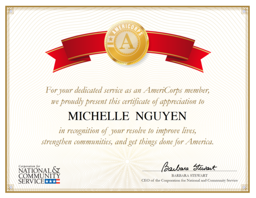
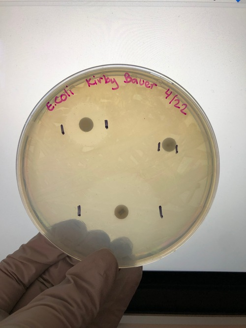
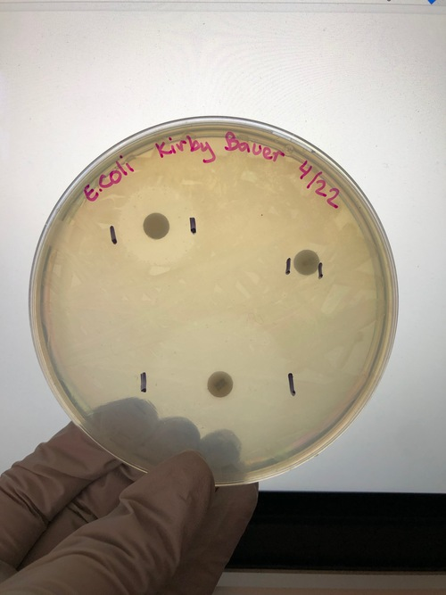
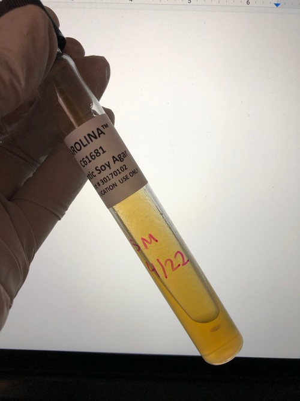
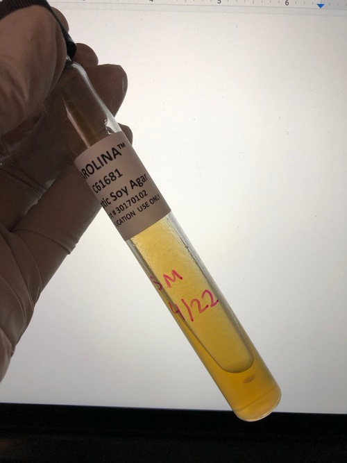

Michelle Nguyen
I am a senior attending my last quarter at the University of California, Riverside and will soon be UCR's graduating class of 2020! Upon graduation I plan on receiving my Bachelor of Science in Biology. Biology has always been a field of study that interested me ever since high school. Personally, it has always been exciting to learn about all types of biological interactions irregardless of it being from humans or non-human living organisms. After attending my first quarter as a freshman at UCR, I was certain I had made the right decision in choosing biology as my major, and I have not regretted it ever since.
Currently, I am in Dr. Kevin Freedman’s bioengineering research lab that focuses on using nanotechnology as a device for medical drug delivery. We conduct research with the use of sterile nanopipettes submerged in salt solutions such as NaCl, and Lambda DNA will then pass through the miniscule pore with the help of electrical currents. These experiments help us study the nature of the translocation of DNA and proteins in order to better understand biological interactions within the human body so that we can design less invasive drug delivery devices using nanotechnology. As of present times, we have shifted our research focus to learning about the ways in which nanotechnology has been helping the global Covid-19 pandemic. This type of technology has aided researchers immensely in the development of Covid-19 tests that detect SARS-CoV-2 within the human body, and our hope is that it will continue in providing efforts to help find an effective vaccine.
In regards to my career path, I am aspiring to be a diagnostic medical sonographer and plan on attending my graduate program of choice in 2021. Another term for a diagnostic medical sonographer is an ultrasound technician, but that does not mean that this career only specializes in providing ultrasounds for expecting mothers. Diagnostic medical sonographers have many specialties which include general, cardiovascular, or even neuro. I am particularly interested in specializing in neuro as a diagnostic medical sonographer because of an amazing experience in a neuroscience class taught at UCR--it is undoubtedly the best class I have ever taken in my life. For me, neuroscience is an interesting field of study because the brain controls all aspects of human function, and it is a relatively new science as there are many more discoveries that have yet to be made. Growing up, I have always been drawn to the healthcare professions as opposed to any other career choices with the main reason being that I want to be able to give back to my community and serve others in a way that gives me a sense of purpose in life. During my childhood, I grew up in an underprivileged socioeconomic background, so I witnessed firsthand what it is like to be denied healthcare. My intentions and goals with becoming a diagnostic medical sonographer is to help diagnose and treat patients with proper medical care as well as contribute to the constantly changing nature of modern healthcare.
Experience
Undergraduate Researcher
• Assisted Professor and graduate students in research
• Inputted raw data into Excel to generate graphs and charts
• Conducted my own experiments involving nanopores and use of Lambda DNA
Student Mentor
• Collaborated with teachers to develop new teaching strategies to maximize student learning potential
• Tutored students to improve their performance in language arts and mathematics
• Efficiently presented new material to students to help them understand and apply the concepts
Assistant
• Answered phone calls and customer inquiries
• Inputted client information into computer database
• Filed and organized client information into their designated folders
Education
UC Riverside
Portfolio


 



